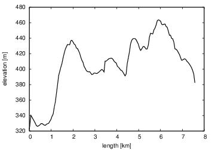

The purpose of this tutorial is to explain how to read XML files and convert the content into numerical data structures that we can compute with. Three different techniques will be exemplified. We start with the most powerful tool: the ElementTree module in Python that maps the hierarchical data structure in an XML file directly onto to a hierarchical, tree-like data structure of Python objects. Any XML file can be parsed and analyzed via the ElementTree module. We then consider two simpler techniques of more limited application: regular expressions and string operations.
The XML file we use here as example contains GPS coordinates (latitude, longitude, elevation, and time) from a GPS application called Trails (for iPhone). We want to extract the GPS coordinates from the XML file and plot the elevation against the length of the track.
An XML file from the Trails application typically has the look
<?xml version="1.0" encoding="UTF-8" standalone="no" ?>
<gpx xmlns="http://www.topografix.com/GPX/1/1"
creator="Trails - GPS Tracker - own track"
version="1.1"
xmlns:xsi="http://www.w3.org/2001/XMLSchema-instance"
xsi:schemaLocation="http://www.topografix.com/GPX/1/1 http://www.topografix.com/GPX/1/1/gpx.xsd">
<trk>
<name>Test2</name>
<desc>(null)</desc>
<trkseg>
<trkpt lat="59.982834" lon="10.647849">
<ele>322.450958</ele>
<time>2011-07-02T16:40:37Z</time>
</trkpt>
<trkpt lat="59.983001" lon="10.647710">
<ele>325.830231</ele>
<time>2011-07-02T16:40:38Z</time>
</trkpt>
...
<trkpt lat="59.975699" lon="10.647084">
<ele>382.443115</ele>
<time>2011-07-02T18:51:54Z</time>
</trkpt>
</trkseg>
</trk></gpx>
The XML file contains, as usual, a set of nested tags in a tree-like
hierarichal structure.
A tag with name name
has an opening tag
The tags of special interest are
First we will parse the whole XML file using the ElementTree module in Python. This module provides a general data structure for hierarchical (tree) data, which is exactly what we need to store XML data.
Some XML file trail1.xml is converted to an ElementTree data structure by
import xml.etree.ElementTree as ET
tree = ET.parse('trail1.xml')
root = tree.getroot() # root of the tree
The ElementTree data structure contains a tree of Element objects. Each such object has a set of key attributes and functions. Consider a generic XML tag name of the form
<name a1="v1" a2="val2" a3="v3">
some information
<subname1 v1="w1" v2="w2">some info 1</subname1>
<subname2>some info 2</subname2>
</name>
This tag name corresponds to an Element object with the following attributes:
An Element instance element can be iterated over, yielding a sequence of children Element instances:
for child in element:
# invoke child.tag, child.text, child.attrib
For the example above, where element has two children, subname1 and subname2, child first equals the Element object corresponding to subname1 and then the Element object corresponding to subname2. When child.tag is {xmlns}subname1, child.attrib is the dictionary {'v1': 'w1', 'v2': 'w2'} and child.text is some info 1.
Each child can also be iterated over. The problem is that children have new children, in general with an unknown and varying depth. Nested loops are therefore not possible or invconvenient, and recursion is the only general solution when walking through a tree structure:
def iterate(element):
print 'element:', element.tag
print ' text:', element.text.strip()
print ' attributes:', element.attrib
for child in element:
iterate(child)
Calling iterate(root), where root is the root Element instance of the ElementTree data structure corresponding to the XML file shown above, the output becomes (some longer parts are condensed into ellipsis to save space):
element: {http://www.topografix.com/GPX/1/1}gpx
text:
attributes: {...}
element: {http://www.topografix.com/GPX/1/1}trk
text:
attributes: {}
element: {http://www.topografix.com/GPX/1/1}name
text: Test2
attributes: {}
element: {http://www.topografix.com/GPX/1/1}desc
text: (null)
attributes: {}
element: {http://www.topografix.com/GPX/1/1}trkseg
text:
attributes: {}
element: {http://www.topografix.com/GPX/1/1}trkpt
text:
attributes: {'lat': '59.982834', 'lon': '10.647849'}
element: {http://www.topografix.com/GPX/1/1}ele
text: 322.450958
attributes: {}
element: {http://www.topografix.com/GPX/1/1}time
text: 2011-07-02T16:40:37Z
attributes: {}
element: {http://www.topografix.com/GPX/1/1}trkpt
text:
attributes: {'lat': '59.983001', 'lon': '10.647710'}
element: {http://www.topografix.com/GPX/1/1}ele
text: 325.830231
attributes: {}
element: {http://www.topografix.com/GPX/1/1}time
text: 2011-07-02T16:40:38Z
attributes: {}
...
element: {http://www.topografix.com/GPX/1/1}trkpt
text:
attributes: {'lat': '59.975699', 'lon': '10.647084'}
element: {http://www.topografix.com/GPX/1/1}ele
text: 382.443115
attributes: {}
element: {http://www.topografix.com/GPX/1/1}time
text: 2011-07-02T18:51:54Z
attributes: {}
The iterate function can hence be used to visit all tags in the tree structure and examine text and attributes of each tag.
We could make a variant of the iterate method above to store all the GPS coordinates:
def GPS_coor(element, data):
"""
Add GPS coordinates to data, a dict of longitude, latitude,
elevation, and time lists.
"""
if element.tag[-5:] == 'trkpt':
data['longitude'].append(float(element.attrib['lon']))
data['latitude'].append(float(element.attrib['lat']))
elif element.tag[-4:] == 'time':
data['time'].append(element.text)
elif element.tag[-3:] == 'ele':
data['elevation'].append(float(element.text))
# Recurse into subtree
for child in element:
GPS_coor(child, data)
data = {'longitude': [], 'latitude': [],
'time': [], 'elevation': []}
GPS_coor(root, data)
import pprint
pprint.pprint(data)
The pretty print output of data becomes
{'elevation': [322.450958,
325.830231,
340.147339,
...
393.591003,
382.443115],
'latitude': [59.982834,
59.983001,
59.983467,
...
59.975732,
59.975699],
'longitude': [10.647849,
10.64771,
10.647775,
...
10.647996,
10.647084],
'time': ['2011-07-02T16:40:37Z',
'2011-07-02T16:40:38Z',
'2011-07-02T16:42:13Z',
...
'2011-07-02T18:50:10Z',
'2011-07-02T18:51:54Z']}
We can easily convert the lists in the data dictionary to arrays:
import numpy as np
longitude = np.array(data['longitude'])
latitude = np.array(data['latitude']),
elevation = np.array(data['elevation'])
# time must be a numpy array with str elements
time = np.array(data['latitude'], dtype=np.object)
Instead of the recursive approach in the previous section, we may use the Element object's findall function to find a list of all tags with a certain name, in correct order. The call is schematically like
tags = element.findall('.//{xmlns}name')
The relevant call in our example, for finding all the trkpt tags as a list points of Element objects, reads
xmlns = root.tag.replace('gpx', '') # extract XML namespace
name = 'trkpt'
points = root.findall('.//' + xmlns + name)
With the points list we can write a more direct code for building the coordinate arrays, knowing that each trkpt element has two attributes with longitude and latitude coordinates and two children containing the corresponding elevation and time values:
def inspect(points):
n = len(points)
latitude = np.zeros(n)
longitude = np.zeros(n)
elevation = np.zeros(n)
timepoints = np.zeros(n, dtype=np.object) # str array elements
for i, point in enumerate(points):
latitude [i] = float(point.attrib['lat'])
longitude[i] = float(point.attrib['lon'])
# point has two children
ele, time = point
elevation [i] = float(ele.text.strip())
timepoints[i] = time.text.strip()
return latitude, longitude, elevation, timepoints
We can then call
latitude, longitude, elevation, timepoints = inspect(points)
The XML data are by this relatively simple code transferred to numpy arrays which can be analyzed as described next.
Now we want to convert the coordinates, given in degrees of latitude and longitude on a sphere (the earth's surface), to an arc length measure in meters. That is, we need to find the distance between the coordinates on the sphere. For this purpose we use the Haversine algorithm, which measures the distance between points on a sphere. The coordinates in degrees must be transformed to radians and then the Haversine formula can compute the distance between two points. It appears that the Haversine formula automatically vectorizes. That is, we can use it for one-dimensional arrays to compute the lengths between an array of points. The cumulative length as we progress through the points are then given as the sum of the individual lengths (obtained by numpy.cumsum).
The Haversine formula and its use look as
def Haversine(from_lon, from_lat, to_lon, to_lat):
"""
Calculates distance between two points (from_lon, from_lat)
and (to_lon, to_lat), given in degrees, using the Haversine
algorithm (see Wikipedia's article on the topic
Great-circle_distance).
The point arguments can be arrays of points. In that case
the progressive lengths between the coordinates are returned.
If the points are two single points, their distance is returned.
The unit of the returned length(s) is meters.
"""
from numpy import sin, cos, arcsin, sqrt, deg2rad, ndarray, \
zeros, cumsum
from_lon = deg2rad(from_lon)
from_lat = deg2rad(from_lat)
to_lon = deg2rad(to_lon)
to_lat = deg2rad(to_lat)
dlon = to_lon - from_lon
dlat = to_lat - from_lat
a = sin(dlat/2)**2 + cos(from_lat)*cos(to_lat)*sin(dlon/2)**2
c = 6367000.0*2*arcsin(sqrt(a))
c = cumsum(c)
# If c is array, augment the array with a [0] element that
# equals 0, such that c reflects progressive length
if isinstance(c, ndarray):
length = zeros(c.size+1)
length[0] = 0
length[1:] = c
else:
length = c
return length
from_lon = longitude[:-1]
from_lat = latitude[:-1]
to_lon = longitude[1:]
to_lat = latitude[1:]
length = Haversine(from_lon, from_lat, to_lon, to_lat)
Plotting the elevation versus the length along the trial is now a matter of calling the scitools.std.plot function: plot(length, elevation). Figure 1 shows the resulting curve.

The time format used in the XML file applies ISO formatted dates, typically looking like 2011-07-02T16:42:13Z. The dateutil.parser module can parse such strings and return datetime objects, which can be converted to seconds since the epoch (January 1, 1970):
>>> import dateutil.parser
>>> time_format = '2011-07-02T16:42:13Z'
>>> dt = dateutil.parser.parse(time_format)
>>> print type(dt), dt
<type 'datetime.datetime'> 2011-07-02 16:42:13+00:00
>>> import time
>>> print time.mktime(dt.timetuple()) # convert to seconds since epoch
1309621333.0
Converting the timepoints array of strings to seconds, starting at 0, is done by the following code snippet:
# Convert time format to seconds since Jan 1, 1970
import dateutil.parser, time
timepoints2 = np.zeros(timepoints.size)
for i in xrange(timepoints2.size):
dt = dateutil.parser.parse(timepoints[i])
timepoints2[i] = time.mktime(dt.timetuple())
# Scale time points so they start at 0
timepoints = timepoints2 - timepoints2[0]
We can now plot elevation versus timepoints, if desired.
The SAX parser walks through the XML file and calls up methods in a user-implemented handler class when meeting a new tag, leaving a tag, encoutering contents in between opening and closing tags, and hitting the end of the document. SAX parsing is a very common technique and parsers are available in almost all programming languages. Here is a sketch of a typical handler class that must be implemented for a particular XML file:
from xml.sax import ContentHandler, make_parser
class SomeContentHandler(ContentHandler):
def __init__(self, debug=False):
ContentHandler.__init__(self)
def startElement(self, tag, attrib):
"""
Called when entering a new tag.
tag: name of tag.
attrib: dict-like object with attributes. attrib.keys()
returns the attribute names, and a value is obtained
by attrib.get(name, default).
"""
def characters(self, text):
"""Treat text between opening and closing of current tag."""
def endElement(self, tag):
"""Called when leaving a tag."""
def endDocument(self):
"""Called when leaving the document."""
The implementation of a simple handler class that just reprints the XML data in an indented, nice, hierarchical fashion may look as follows:
class DebugContentHandler(ContentHandler):
def __init__(self, debug=False):
ContentHandler.__init__(self)
self.debug = debug # False: no output
self._tag_level = 0 # helps to make indented output
def startElement(self, tag, attrib):
if self.debug:
print ' '*self._tag_level, '<%s>' % tag, \
', '.join(['%s=%s' % (name, attrib.get(name, None)) \
for name in attrib.keys()])
self._tag_level +=1
def characters(self, text):
text = text.strip()
if text != '' and self.debug:
print ' '*self._tag_level, text
def endElement(self, tag):
self._tag_level -= 1
if self.debug:
print ' '*self._tag_level, '</%s>' % tag
A main program for testing this class on our sample file trail1.xml reads
parser = make_parser()
handler = DebugContentHandler(debug=True)
parser.setContentHandler(handler)
parser.parse('trail1.xml')
The typical output has the following structure:
<gpx> xmlns:xsi=http:...
<trk>
<name>
Test2
</name>
<desc>
(null)
</desc>
<trkseg>
<trkpt> lat=59.982834, lon=10.647849
<ele>
322.450958
</ele>
<time>
2011-07-02T16:40:37Z
</time>
</trkpt>
<trkpt> lat=59.983001, lon=10.647710
<ele>
325.830231
</ele>
<time>
2011-07-02T16:40:38Z
</time>
</trkpt>
...
<trkpt> lat=59.975699, lon=10.647084
<ele>
382.443115
</ele>
<time>
2011-07-02T18:51:54Z
</time>
</trkpt>
</trkseg>
</trk>
</gpx>
This example shows how the various methods in the handler class can extract data in the XML file.
The next example actually extracts data and stores them in a data dictionary as used in the recursive analysis via the ElementTree data structure. To enable output of XML data for debugging, we derive the handler class from DebugContentHandler so that the flag debug to the constructor can turn on or off the output of XML data. This feature may be convenient in the development phase of the handler.
The handler class must initialize a dictionary self.data with the right keys in the constructor and empty arrays as values. The startElement method can fill in latitude and longitude values from the attrib argument in case of a trkpt tag. The elevation and time values must be handled in the characters method, and then we need to know what the current tag is. The name of the current tag must therefore be stored in startElement. The endElement method has no use here, except for calling the parent class' endElement method in case nice output of XML data is wanted. The endDocument method is either omitted or empty in this application.
The complete handler class takes the form
class GPSContentHandler(DebugContentHandler):
def __init__(self, debug=False):
DebugContentHandler.__init__(self, debug)
self.data = {'longitude': [], 'latitude': [],
'time': [], 'elevation': []}
def startElement(self, tag, attrib):
DebugContentHandler.startElement(self, tag, attrib)
self.current_tag = tag
if tag == 'trkpt':
self.data['longitude'].append(float(attrib['lon']))
self.data['latitude'].append(float(attrib['lat']))
def characters(self, text):
DebugContentHandler.characters(self, text)
text = text.strip()
if text == '':
return
elif self.current_tag == 'ele':
self.data['elevation'].append(float(text))
elif self.current_tag == 'time':
self.data['time'].append(text)
def endElement(self, tag):
DebugContentHandler.endElement(self, tag)
def endDocument(self):
"Can clean/finish up data structures here."
pass
The code that puts the handler in action becomes
parser = make_parser()
handler = GPSContentHandler(debug=True)
parser.setContentHandler(handler)
parser.parse('trail1.xml')
pprint.pprint(handler.data)
Parts of XML files with a sufficiently simple structure can easily be parsed using regular expressions. This is particularly the case with the present sample file. We see that all the data we are interested in appear in text with the structure
<trkpt lat="TEXT1" lon="TEXT2">somewhitespace
<ele>TEXT3</ele>somewhitespace
<time>TEXT4</time>
where TEXT1, TEXT2, TEXT3, and TEXT4 are parts of the text what we are interested in extracting. The relevant regular expression for doing this employs groups for the desired text parts:
regex = r'<trkpt lat="([^"]+)" lon="([^"]+)">\s*'\
'<ele>([^<]+)</ele>\s*<time>([^<]+)</time>'
With the findall function in the re module we can extract all occurences of this regular expression. The returned result is a list where each list element consists of a tuple of the four groups, containing the latitude, longitude, elevation, and time values as strings. We can easily iterate over this list and store data in numpy arrays:
import re
xml_text = open('trail1.xml', 'r').read()
groups = re.findall(regex, xml_text)
n = len(groups) # no of points (occurences of trkpt tag)
latitude = np.zeros(n)
longitude = np.zeros(n)
elevation = np.zeros(n)
timepoints = np.zeros(n, dtype=np.object)
for i, data in enumerate(groups):
lat, lon, ele, time = data
latitude [i] = float(lat)
longitude [i] = float(lon)
elevation [i] = float(ele)
timepoints[i] = time.strip()
Reading the XML data by regular expressions turned here out to be much simpler than using ElementTree. Nevertheless, more complex XML files might not be feasible to parse via regular expressions.
The shown XML file is also simple enough to allow for building lists of GPS coordinates while we read the file line by line. Each line is a string that can be split into pieces such that the desired information is readily extracted. For example, a typical line with the trkpt tag,
<trkpt lat="59.982834" lon="10.647849">
stored in some variable line, can be split into words, separated by white space: line.split(). The second and third word can be split with respect to =. The second part of those splits yields the desired coordinate, except for the quotes, but indexing the coordinate strings as [1:-1] strips off the quotes. Therefore, we can extract the lat and lon values by
line = line.strip()
if '<trkpt>' in line:
words = line.split()
lat = words[1].split('=')[1][1:-1]
lon = words[2].split('=')[1][1:-2]
The lines with the ele and time tags are easier to deal with as we can strip off the start and end tags by proper indexing, e.g.,
ele = line[5:][:-6]
The relevant code, building a data dictionary of lists as we showed in the first ElementTree example with recursive traversal of the tree structure, becomes like this:
# Parsing of XML file via string operations
data = {'longitude': [], 'latitude': [],
'time': [], 'elevation': []}
xml_file = open('trail1.xml', 'r')
for line in xml_file:
line = line.strip()
if '<trkpt>' in line:
words = line.split()
lat = words[1].split('=')[1][1:-1]
lon = words[2].split('=')[1][1:-2]
data['latitude'].append(float(lat))
data['longitude'].append(float(lon))
elif '<ele>' in line:
ele = line[5:][:-6]
data['elevation'].append(float(ele))
elif '<time>' in line:
data['time'].append(line[6:][:-7])
The complete Python script containing all the code examples above is available.